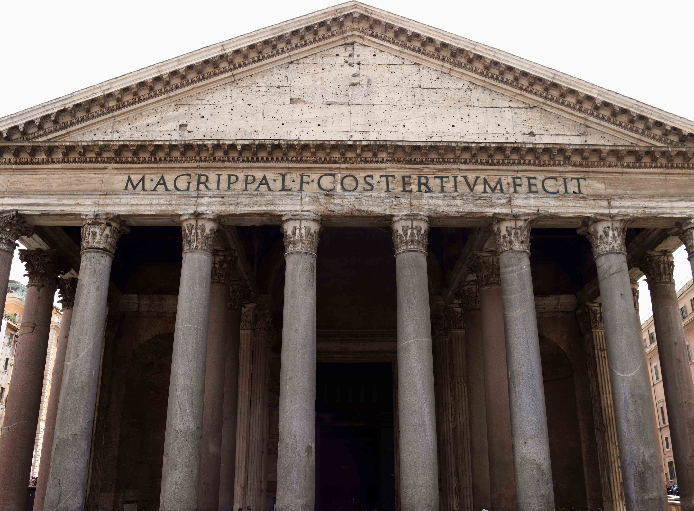

St. Peter Basilica
St. Peter's Basilica, a majestic structure in Vatican City, stands atop the sacred resting place of St. Peter, one of Jesus Christ's apostles and the inaugural bishop of Rome. The basilica carries profound religious significance as a central symbol of the Catholic Church. The magnificence of St. Peter's Basilica extends beyond its physical presence, serving as a spiritual and cultural beacon for Catholics worldwide. The basilica's dome's ornate interior further emphasize its role as a place of worship, pilgrimage, and deep reverence within the Catholic faith.
This majestic building stands as a testament to the artistic and architectural achievements of the Renaissance and Baroque periods, showcasing the creative brilliance of luminaries like Michelangelo and Gian Lorenzo Bernini. St. Peter's Basilica seamlessly blends classical aesthetics with intricate detailing, embodying the spirit of these historical epochs.
It's construction started in 1506 under Pope Julius II and the construction lasted for several centuries. Many world renowned architecture contributed to its design, each leaving their own mark on the structure, resulting in a harmonious blend of architectural styles.
The Pantheon showcases the enduring brilliance of classical design and engineering. Built under Marcus Agrippa's direction during Augustus's reign (27 BCE - 14 CE), it was later refined by Emperor Hadrian around 126 CE, creating the structure we see today. The iconic dome, a marvel of Roman engineering, demonstrates their ingenuity with the use of concrete and the oculus, a central opening that brings natural light into the interior. This architectural gem has fascinated visitors for centuries with its timeless features
The Pantheon, meaning "All the Gods" in Greek, started as a revered Roman temple under Marcus Agrippa during Augustus's reign. As Christianity rose, it transformed into a Christian church in the 7th century, blending religious traditions and ensuring its preservation. This adaptive conversion marked a crucial chapter in the Pantheon's history, exemplifying its cultural resilience.
The Pantheon, a must-see landmark, showcases ancient Roman engineering with its iconic dome and meticulously designed oculus. Beyond its structural brilliance, it symbolizes Rome's cultural heritage, blending religious transitions from a pagan temple to a Christian church. Today, as a timeless architectural gem, the Pantheon invites admiration, serving as a living link to the splendors of ancient Roman engineering and the enduring legacy of the city
The Pantheon
The arch of Titus

The construction of the Arch of Titus, initiated in the early 1st century AD, marked a significant architectural endeavor that culminated in its completion in 81 AD, during the reign of Emperor Domitian. This triumphal arch, located on the prominent Via Sacra near the Roman Forum, stands as a lasting testament to the military achievements of Titus, the elder brother of Domitian
Among Titus's remarkable feats, the Siege of Jerusalem in 70 AD stands out prominently. This pivotal campaign resulted in the capture and sacking of the city by Roman forces, an event that found its immortalisation on the arch's reliefs. Of particular note was the acquisition of valuable spoils, including the Menorah, a seven-branched candelabrum from the sacred Jewish Temple, which the Romans triumphantly brought back to Rome. The reliefs on the Arch of Titus not only capture the intensity of the Siege of Jerusalem but also emphasize the symbolic significance of the spoils, showcasing the prowess of Roman military might and the Flavian dynasty's influence across the vast reaches of the empire.
These inscriptions, etched into the stone, intricately detail the military accomplishments of Titus, particularly his leadership during the Siege of Jerusalem. Additionally, they highlight the profound admiration and dedication expressed by Domitian, emphasizing the familial bonds that defined the Flavian dynasty. These inscriptions not only contribute to the arch's historical narrative but also underscore the significance of Titus's victories in the broader context of Roman imperial history.